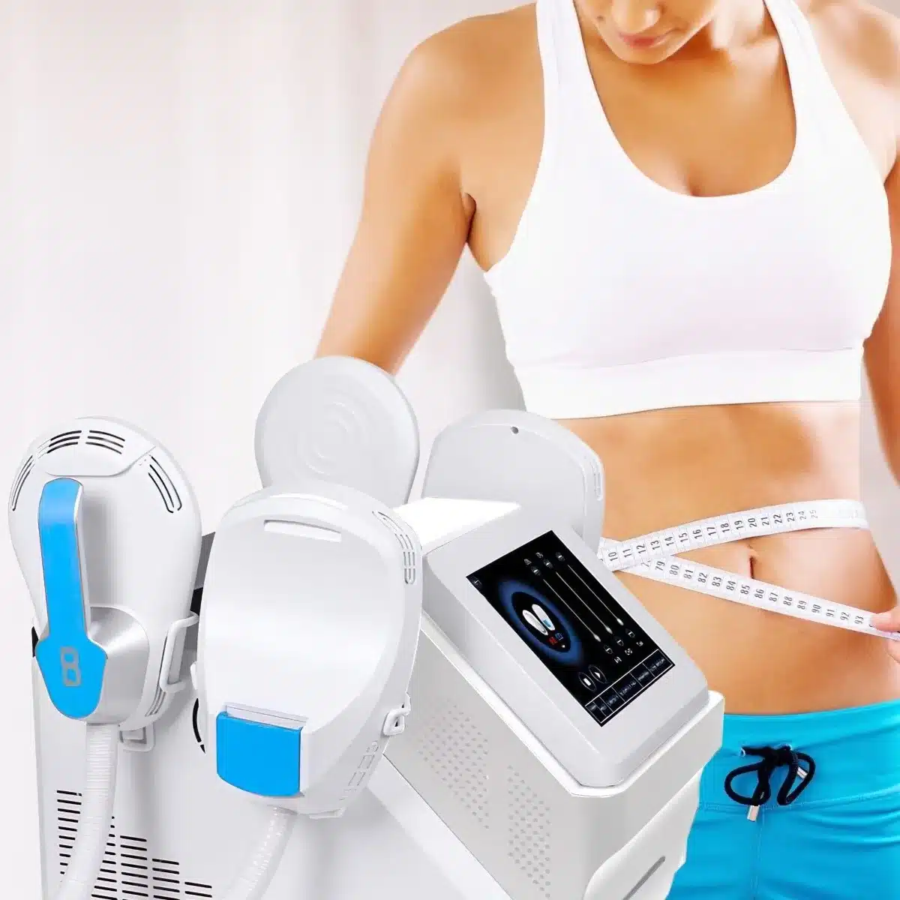
M-Sculp
Energía electromagnética de alta intensidad para esculpir, tonificar y levantar glúteos.

Terapias de Hipopresivos
Técnicas posturales y respiratorias que fortalecen tu core profundo, rehabilitan el suelo pélvico y transforman tu cuerpo de forma segura y natural.
Sesiones personalizadas, recuperación postparto y programas grupales adaptados a cada etapa de tu vida.
Descubre nuestras terapias
Resultados Reales
Gimnasia hipopresiva, rehabilitación de suelo pélvico y recuperación postparto. Resultados visibles desde las primeras sesiones.
Desliza las imágenes para ver los resultados


Transformaciones con nuestra tecnología corporal
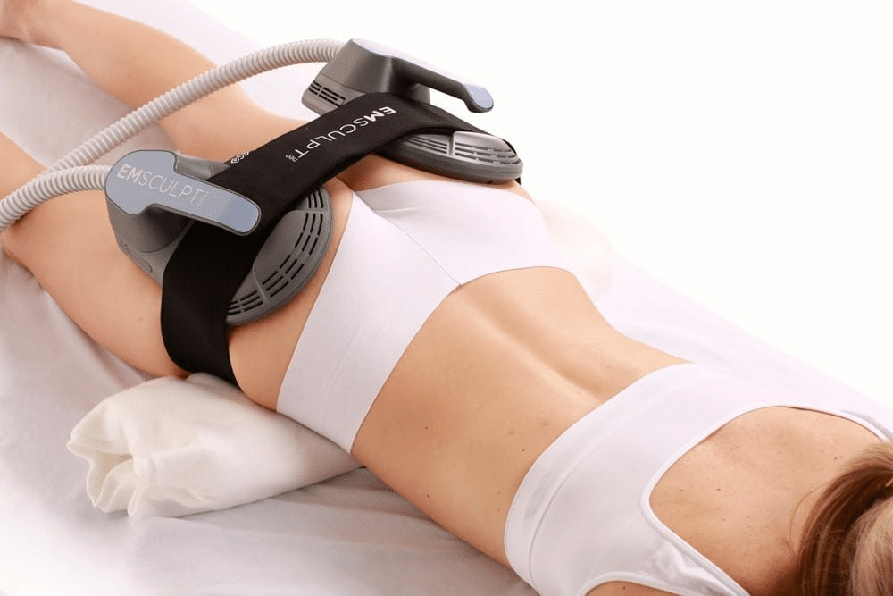
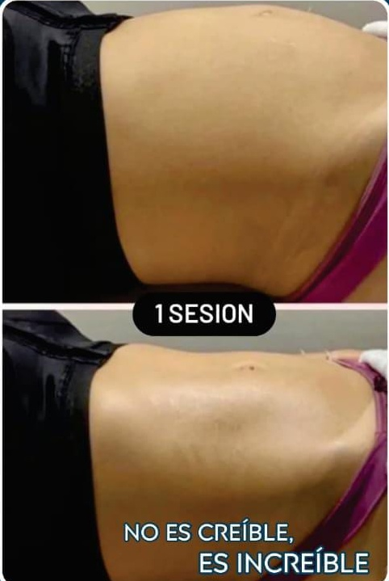
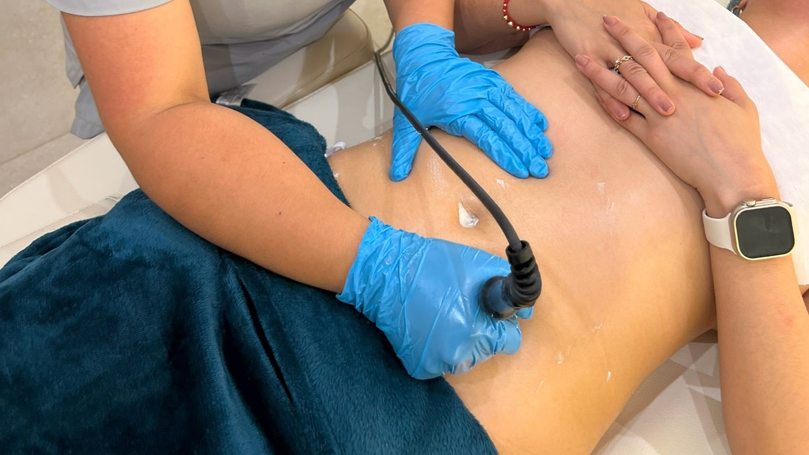
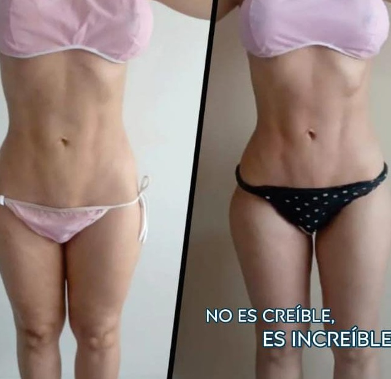
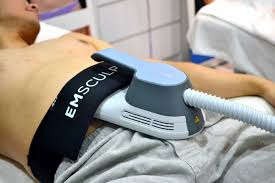
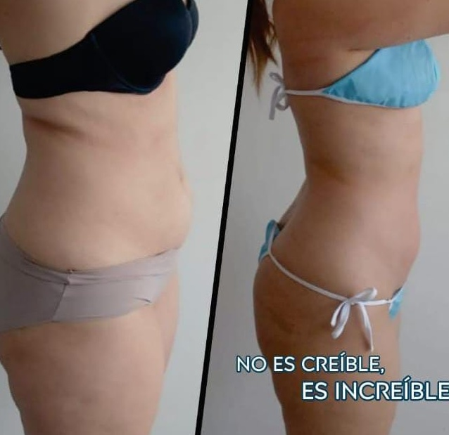
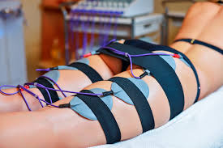
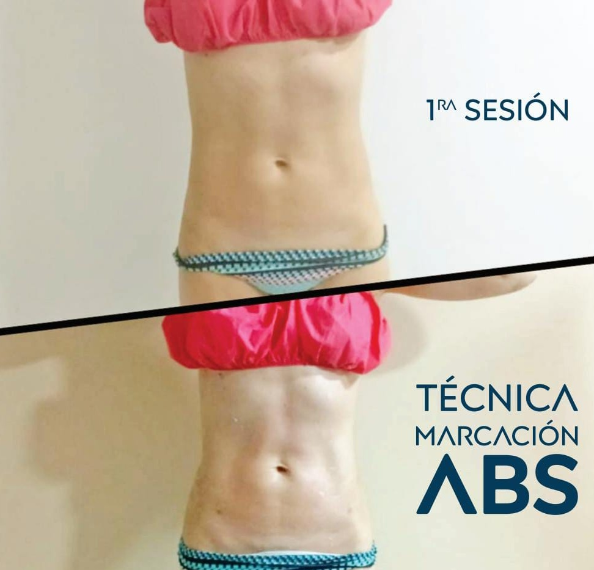

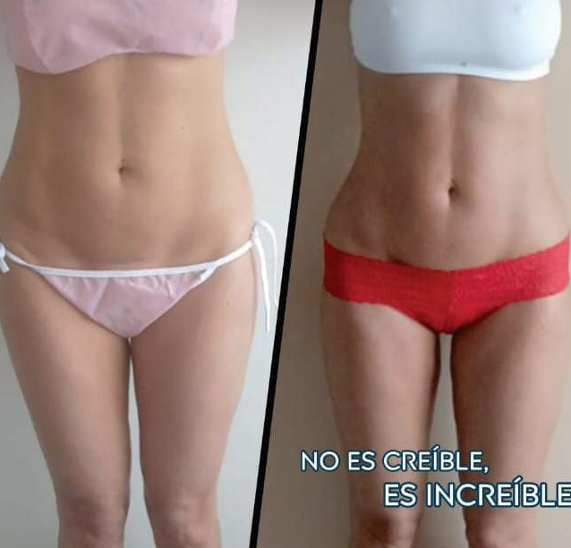
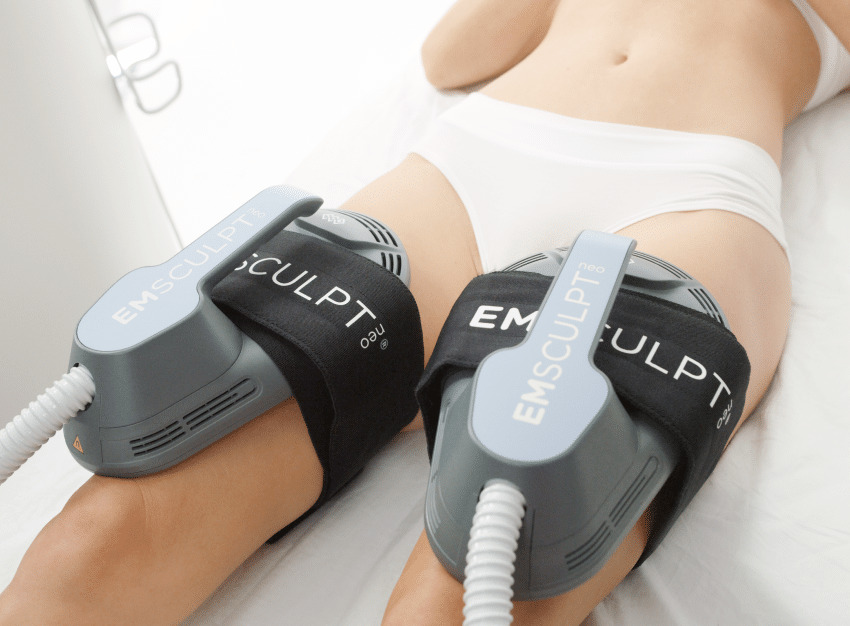
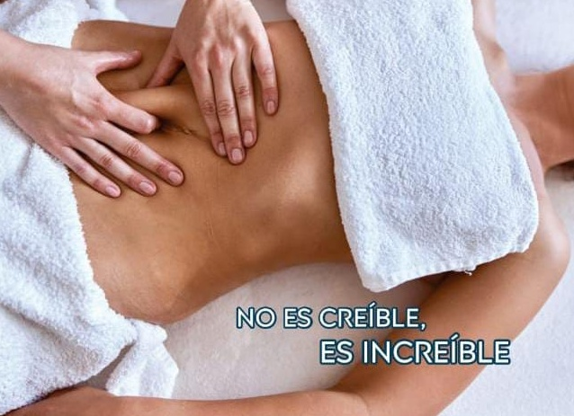
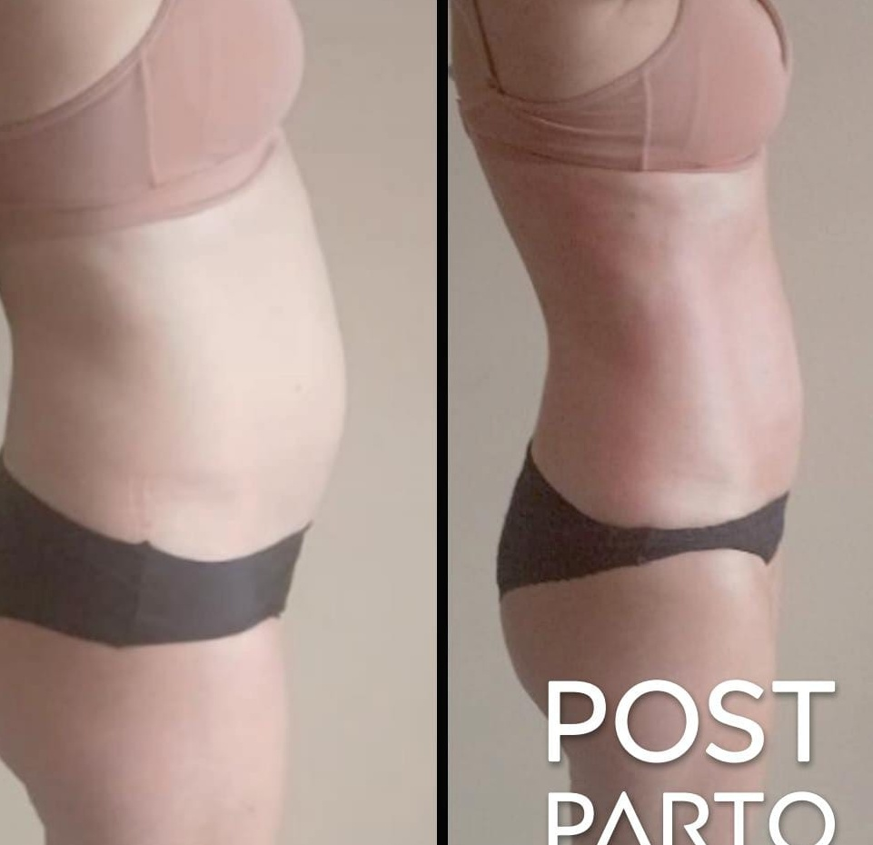
Bienestar integral a través de la gimnasia hipopresiva

Energía electromagnética de alta intensidad para esculpir, tonificar y levantar glúteos.
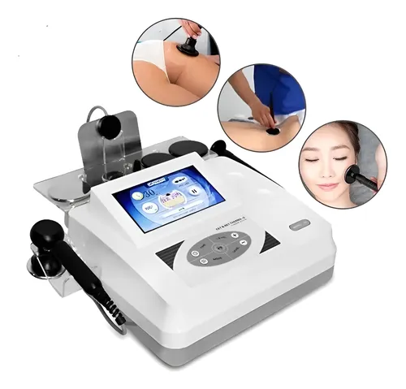
Radiofrecuencia monopolar que reafirma la piel, reduce grasa y elimina celulitis.
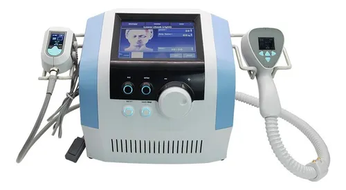
Radiofrecuencia y ultrasonido para rejuvenecer la piel y reducir grasa. No invasivo.
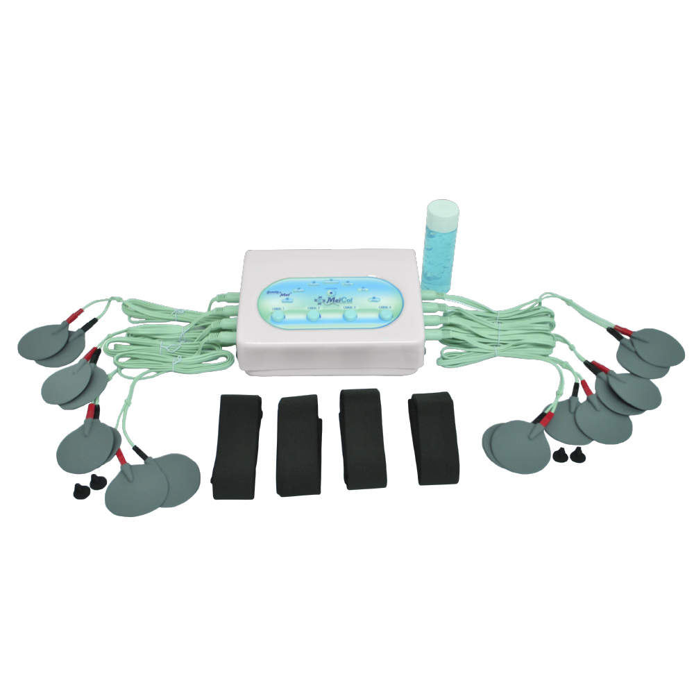
Electroestimulación muscular que tonifica y mejora circulación sin esfuerzo físico.
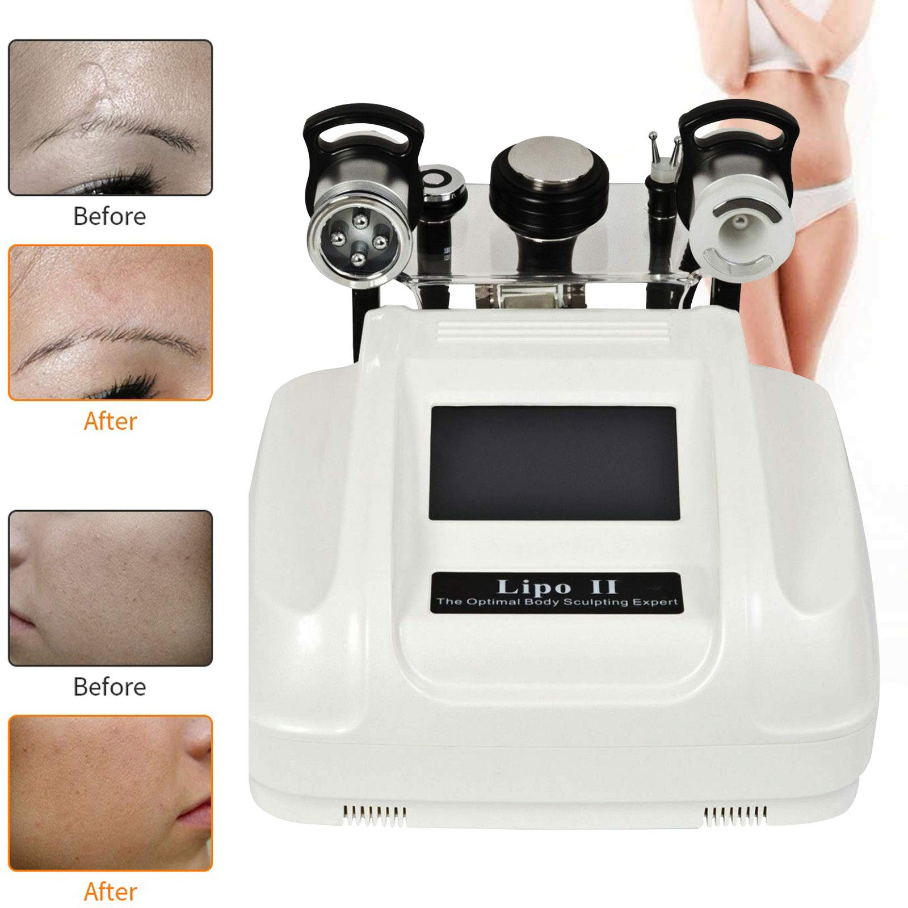
Ondas ultrasónicas que destruyen grasa localizada. Sin cirugía, sin dolor.
Valoración individual y plan de terapia adaptado a tus necesidades específicas.
Contenido exclusivo de nuestras terapias y resultados
Resultados reales con la gimnasia hipopresiva